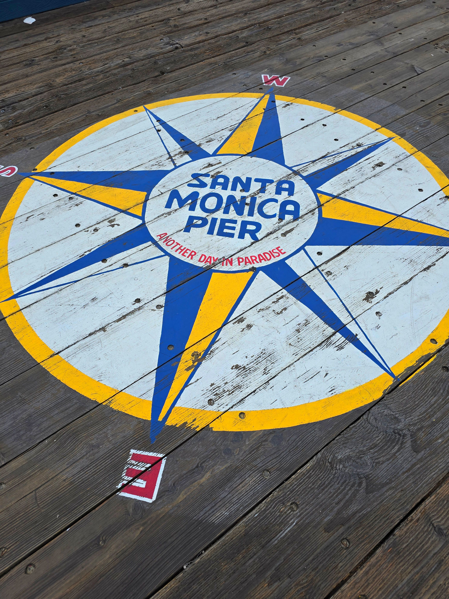

La nostra avventura parte da Venezia. Dopo un lungo viaggio, con scalo a Roma, atterriamo a Los Angeles alle 13:15. Ritirata l’auto a noleggio, ci dirigiamo verso Santa Monica, la nostra prima tappa e il luogo in cui trascorreremo la notte.
Ad accoglierci non è il classico cielo azzurro della California: la giornata è grigia e nuvolosa. Non sappiamo bene cosa aspettarci, soprattutto dopo i terribili incendi che hanno recentemente colpito le aree circostanti. Tra le zone più duramente segnate c’è Pacific Palisades, non lontano da qui: interi quartieri sono stati devastati e molte famiglie hanno dovuto lasciare le proprie case. È impossibile non rivolgere un pensiero a chi sta affrontando le conseguenze di questa tragedia.
Nonostante il cielo coperto, non possiamo certo iniziare il nostro viaggio senza una passeggiata sul celebre Santa Monica Pier. Tra le luci del luna park, il rumore dell’oceano e l’inconfondibile atmosfera del molo, cominciamo finalmente a sentirci davvero in California.
Per cena scegliamo il Bubba Gump, dove mangiamo benissimo. C’è tanta gente, l’aria è fresca e intorno a noi non manca qualche personaggio decisamente colorito. Insomma, fin dalle prime ore respiriamo un’atmosfera vivace, particolare e piacevolmente americana.
Il viaggio è appena cominciato, ma Los Angeles ci ha già regalato le prime emozioni.
